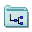
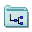
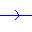
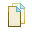
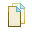

Creating and Editing a Finite-State Machine
In this section, we present a guide to creating and editing a general finite-state machine.
Creating, Saving, and Loading Machines 
 

To begin, we must create a new machine window. This can be done by clicking on
File > New Machine, and selecting the type of machine that you would like to create.
Existing machines may be saved or loaded from disk by selecting File > Save Machine and
File > Open Machine respectively.
Choosing an Alphabet 
The alphabet associated with the machine, Σ, may be chosen after the machine has been created.
To do this, select Configuration > Configure Alphabet. This will bring up the alphabet
configuration dialog. Check the boxes for the symbols that you wish to include in your alphabet,
and press Ok.
If your current machine contains transitions which do not belong to the new alphabet that you have
chosen, you will be prompted to either automatically delete these transitions, or to undo the
changes made to the alphabet.
Adding States 
To add a state, select Mode > Add States, and click on an empty space in the machine window.
This will create a new state under your cursor. Alternatively, a new state can be placed under the
cursor by right clicking and selecting Add State from the context menu.
Adding Transitons 
To add a transition, select Mode > Add Transitions. To add a transition between two distinct
states, click on the first state, drag the mouse to the second state, and release. To create a
loop, simply click and release the mouse on the same state.
Every transition has an input and action associated with it. This action is dependent on the type
of machine being designed. In a Turing machine, the action determines whether or not the
read/write head should move left or right, or whether it should write a value back to the tape.
In a DFSA, there is no action, only an input.
By default, the transition created will contain the undefined symbol, '!', which
indicates that the transition has yet to be given a value. If a machine contains a transition with
the undefined symbol, it cannot be simulated.
Choosing Transition Symbols
To set the values of a transition, click on the value, and type the character that you would like to
change the symbol to be. You may only change the symbol to characters that belong to the alphabet
of your machine, Σ, or are machine-specific special characters. These special characters are
listed in the Input Symbols section here.
Deleting States and Transitions 
To delete a state or transition, select Mode > Eraser, and click on a state or transition to
erase it. Alternatively, a state or transition may be deleted by right clicking the object and
selecting Delete from the context menu.
Moving States and Transitions
To move a state, click on the state and drag it to move it to another location. Transitions can be
moved similarly by clicking on their action text or the directional arrows and dragging.
Choosing a Start State 
To toggle whether or not a state is a start state, select Mode > Choose Start State, and click on a
state to toggle whether it is a start state or not. Alternatively, a state may be toggled by right
clicking the state and selecting Toggle Start from the context menu.
Choosing a Final State 
To toggle whether or not a state is a final state, select Mode > Choose Final State, and
click on a state to toggle whether or not it is a final state or not. Alternatively, a state may be
toggled by right clicking the state and selecting Toggle Final from the context menu.
Cutting, Copying, and Pasting 
 



A set of states can be selected by dragging a box around them using Mode > Selection. To add
or remove states from the current set of selected states, click on them while holding the shift key.
All transitions that connect only to other states within the set of selected states are
automatically selected.
These selected states and transitions can now be cut, copied, pasted, or deleted using the
appropriate items from the Edit menu. Pasted states are renamed to the first free name that
has not yet been used in this machine to prevent duplication of names.
Renaming States
To give a state a custom name, right click on the state. This brings up the appropriate context
menu from which the state may be renamed. States must be uniquely named within a machine -
duplicate names are not allowed.
Alternatively, the names of all states may be reset by right clicking anywhere in the machine window
and selecting Reset All Labels. This will assign every state a unique name of the form
'q[n]'.
If the current machine is a Turing machine, the machine may instead be normalized by right
clicking anywhere in the machine window and selecting Normalize. This will automatically
rename all states in the machine according to a specific set of rules:
- The unique start state is named '0'.
- The unique final state is named 'n-1'.
- Every other state is given a number from '1' to 'n-2' inclusive.
where there are n states in the machine.